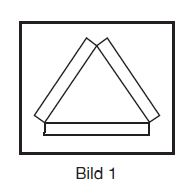
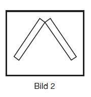
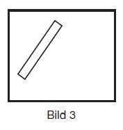
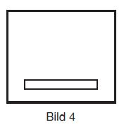

| Signalstelle A: | km 550,57, linkes Ufer, am Ochsenturm bei Oberwesel; |
| Signalstelle B: | km 552,80, linkes Ufer, am Kammereck; |
| Signalstelle C: | km 553,61, linkes Ufer, am Betteck; |
| Signalstelle D: | km 554,34, linkes Ufer, gegenüber der Loreley („Die Lützelsteine“); |
| Signalstelle E: | km 555,43, linkes Ufer, an der Bank. |
| Feld | Nummer der Teilstrecke | Oberstromgrenze der Teilstrecke | Unterstromgrenze der Teilstrecke |
| Signalstelle A: am Ochsenturm | |||
| oben | 1 | km 548,50 | km 549,50 |
| unten | 2 | km 549,50 | km 550,57 |
| Signalstelle C: am Betteck | |||
| oben | 3 | km 550,57 | km 551,30 |
| Mitte | 4 | km 551,30 | km 552,40 |
| unten | 5 | km 552,40 | km 553,60 |
| Signalstelle D: gegenüber der Loreley („Die Lützelsteine“) | |||
| oben | 4 | km 551,30 | km 552,40 |
| Mitte | 5 | km 552,40 | km 553,61 |
| unten | 6 | km 553,61 | km 554,34 |
| Signalstelle E: an der Bank | |||
| oben | 6 | km 553,61 | km 554,34 |
| unten | 7 | km 554,34 | km 555,43 |
| In der Teilstrecke fährt mindestens ein Verband mit einer Länge über 110 m zu Tal. |  |
| In der Teilstrecke fährt mindestens ein Verband mit einer Länge bis 110 m oder ein Fahrzeug mit einer Länge über 110 m oder mit einer Breite über 15 m zu Tal. |  |
| In der Teilstrecke fährt mindestens ein Fahrzeug mit einer Länge bis 110 m zu Tal. |  |
| In der Teilstrecke befindet sich kein Talfahrer. |  |